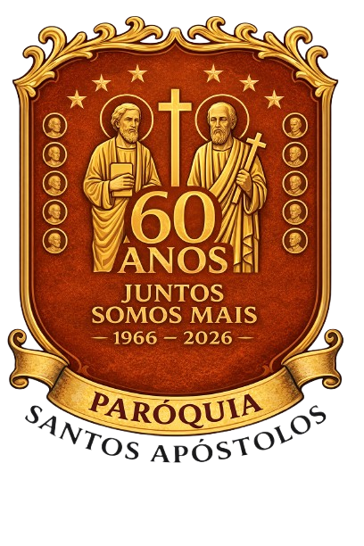
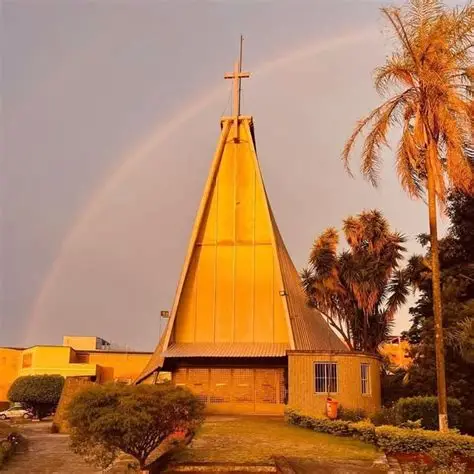

.png)
- Avisos
- Horários de missa e confissões
- Sobre nós
- Endereço
- Contato


A Igreja de Zinco, oficialmente conhecida como Paróquia Santos Apóstolos, foi fundada em 1966 para atender às necessidades espirituais e sociais da comunidade local. Desde então, tornou-se um símbolo de fé, acolhimento e solidariedade, reunindo gerações de famílias em celebrações, eventos e ações sociais.
Ao longo de sua trajetória, a igreja passou por diversas transformações, sempre mantendo o compromisso com a evangelização, a promoção da justiça e o apoio aos mais necessitados. Suas portas estão sempre abertas para quem busca conforto, orientação e um espaço de convivência fraterna.
Em 2026, celebramos com orgulho os 60 anos de fundação da Paróquia Santos Apóstolos, agradecendo a todos que contribuíram para construir essa bela história de amor, fé e serviço à comunidade.
.webp)
Rua General Manuel Cavalcante Proença, 183 - Jd. Almanara
Rua Morato de Oliveira, 388 - Parque Itaberaba
Praça Senhor do Bonfim, 16 - Vila Penteado
Rua Herman Richter, 26 - Vila Penteado